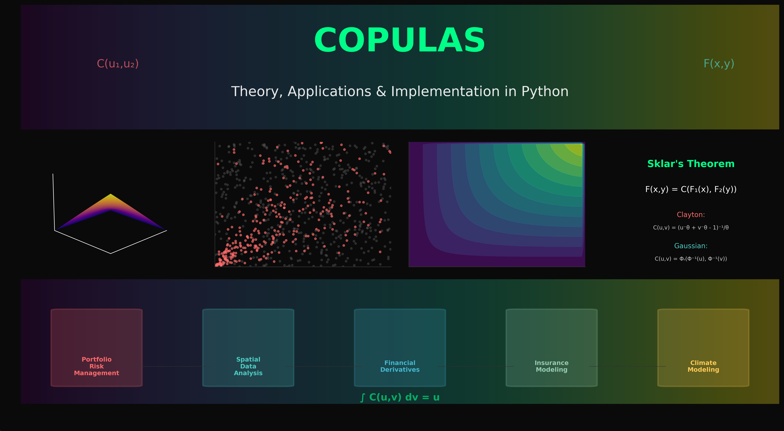
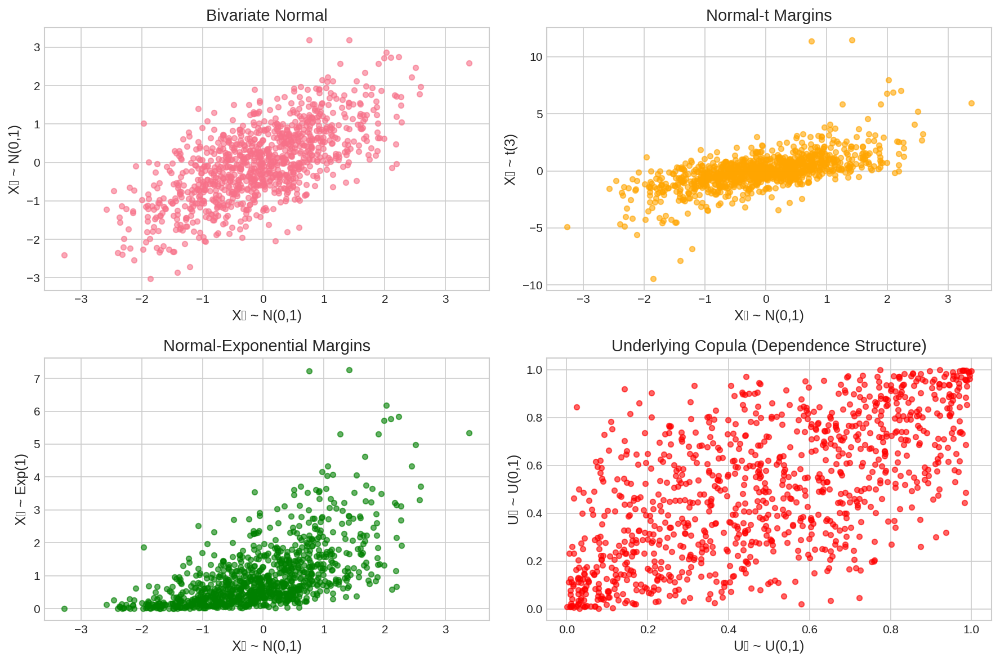

This post offers a concise and intuitive introduction to copula theory, explaining what copulas are, why they are useful, and how they are applied in finance. We’ll skip the heavy math and focus on the core ideas.

Copulas provide a powerful framework for modeling complex dependence structures while separating marginal distributions from their joint behavior
1 What are Copulas?
Have you ever tried to model the relationship between two or more variables, but found that they don’t follow a nice, clean multivariate normal distribution? Real-world data, especially in finance, is often messy. Variables can have different distributions (some normal, some skewed, some with fat tails), and their dependence can be more complicated than simple linear correlation.
This is where copulas come in. The word “copula” means “link” or “tie,” and that’s exactly what they do: they link marginal distributions of variables together to form a multivariate distribution. The key idea is to separate the dependence structure from the marginal distributions. This means you can model the distribution of each variable on its own, and then use a copula to describe how they move together.
This separation is incredibly powerful. It allows us to model complex dependencies, like the tendency of assets to crash together in a financial crisis (tail dependence), without being constrained by assumptions like normality.
2 Sklar’s Theorem: The Core Idea
The magic behind copulas is formalized by Sklar’s Theorem. In simple terms, the theorem states that any multivariate distribution can be broken down into two parts:
The individual marginal distributions of each variable.
A copula function that describes the dependence structure between them.
For a two-variable case, if you have a joint distribution \(F(x_1, x_2)\) with marginals \(F_1(x_1)\) and \(F_2(x_2)\), Sklar’s theorem says:
\[ F(x_1, x_2) = C(F_1(x_1), F_2(x_2)) \]
Here, \(C\) is the copula. It’s a function that takes the marginal probabilities (which are between 0 and 1) and combines them to give the joint probability.
The plot below illustrates this. We start with two variables that have a certain dependence (a Gaussian copula). We can then apply different marginal distributions (Normal, t-distribution, Exponential) to them, and the underlying dependence structure is preserved.
Code
np.random.seed(42)n =1000# Generate data with different marginal distributions but same dependencerho =0.7Z = np.random.multivariate_normal([0, 0], [[1, rho], [rho, 1]], n)# Transform to different margins while preserving dependenceX1 = stats.norm.cdf(Z[:, 0]) # Uniform marginsX2 = stats.norm.cdf(Z[:, 1])# Apply different marginal transformationsY1 = stats.norm.ppf(X1) # Normal margins (original)Y2_normal = stats.norm.ppf(X2)Y2_t = stats.t.ppf(X2, df=3) # t-distribution marginsY2_exp = stats.expon.ppf(X2) # Exponential marginsfig, axes = plt.subplots(2, 2, figsize=(12, 8))# Original data (bivariate normal)axes[0, 0].scatter(Y1, Y2_normal, alpha=0.6, s=20)axes[0, 0].set_title('Bivariate Normal')axes[0, 0].set_xlabel('X₁ ~ N(0,1)')axes[0, 0].set_ylabel('X₂ ~ N(0,1)')# Same copula, different marginsaxes[0, 1].scatter(Y1, Y2_t, alpha=0.6, s=20, color='orange')axes[0, 1].set_title('Normal-t Margins')axes[0, 1].set_xlabel('X₁ ~ N(0,1)')axes[0, 1].set_ylabel('X₂ ~ t(3)')axes[1, 0].scatter(Y1, Y2_exp, alpha=0.6, s=20, color='green')axes[1, 0].set_title('Normal-Exponential Margins')axes[1, 0].set_xlabel('X₁ ~ N(0,1)')axes[1, 0].set_ylabel('X₂ ~ Exp(1)')# Copula data (uniform margins)axes[1, 1].scatter(X1, X2, alpha=0.6, s=20, color='red')axes[1, 1].set_title('Underlying Copula (Dependence Structure)')axes[1, 1].set_xlabel('U₁ ~ U(0,1)')axes[1, 1].set_ylabel('U₂ ~ U(0,1)')plt.tight_layout()plt.show()

Figure 1: The same dependence structure (copula) can be combined with different marginal distributions.
3 Common Copula Families
There are many different families of copulas, each capturing a different type of dependence. Here are a few common ones.
3.1 Archimedean Copulas
These are constructed from a function called a generator. They are popular because they are easy to construct and can model a wide range of dependence patterns.
Clayton Copula: Good for modeling lower tail dependence. Think of a financial crisis where different stocks crash together.
Gumbel Copula: Good for modeling upper tail dependence. This could be useful for modeling assets that experience simultaneous extreme positive returns.
Frank Copula: Models symmetric dependence, but without tail dependence.
The plot below shows how these three copulas capture different dependence structures.
Figure 2: Comparison of major Archimedean copula families.
3.2 Elliptical Copulas
These are derived from elliptical distributions like the Normal and Student’s t distributions.
Gaussian Copula: This is the copula of the multivariate normal distribution. It’s defined by the correlation matrix, but it doesn’t have tail dependence. This means it’s not great at modeling extreme events.
Student’s t Copula: This copula is derived from the multivariate t-distribution. It has a “degrees of freedom” parameter that allows it to model tail dependence, making it very useful in finance.
The plot below shows simulated data from a Gaussian and a Student’s t copula. Notice how the t-copula has more points in the corners (the tails), indicating tail dependence.
Figure 3: Gaussian vs. Student’s t copula simulations.
4 A Quick Look at Financial Applications
One of the most common uses of copulas is in financial risk management. Let’s say you have a portfolio of assets and you want to calculate its Value-at-Risk (VaR), which is the maximum loss you can expect with a certain confidence level.
A traditional approach might assume that asset returns are multivariate normal. However, we know this is often not true. With copulas, we can build a more realistic model:
Model the marginal distribution of each asset’s returns individually. We can use a distribution that captures fat tails, like the Student’s t-distribution.
Use a copula (e.g., a Student’s t copula) to model the dependence between the assets. This will capture the tendency of assets to move together, especially in downturns.
Simulate thousands of scenarios for the portfolio’s return from this copula-based model.
Calculate VaR from the simulated returns.
This approach gives a much more accurate picture of the portfolio’s risk than traditional methods that rely on unrealistic assumptions.
5 Conclusion
Copulas are a powerful tool for modeling complex dependencies in data. By separating the dependence structure from the marginal distributions, they provide a flexibility that is missing in many classical statistical models. While the mathematics can get complicated, the core idea is simple and intuitive. They are especially useful in finance, where they help us build more realistic models of risk.